Sandbox5
| 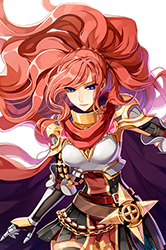 | Rune Knight | Royal Guard | 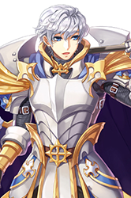 |
|
Having mastered the arts of swordsmanship, Rune Knights sought for more power. Though they are incapable to harness magical powers within their body, they manage to use them by the help of medium called runes. Aside from runes in their arsenal, they possess powerful close combat capabilities while riding their trustworthy dragon to battle. |
Utilizing the formerly forgotten arts of King Schmitz's elite combat unit, Royal Guards destroy enemies with powerfully enhanced spear and shield skills, while still being a stalwart defender for their allies. Their spear skills can flatten hordes of enemies; their defensive spells make them tough to cut down, and their signature skill Devotion allows them to absorb damage from their party mates to keep them alive. | ||

|
Warlock | Sorcerer | |
|
Upon travelling to the New World, the Wizards of Rune-Midgarts discovered the ancient magic of Jotunheim's Frost Giants. The new practitioners dubbed themselves Warlocks, and their mastery of the elements allowed them to freeze and petrify swarms of enemies all at once. They could also combine the elements however they please into an explosive Tetra Vortex. |
Through long and hard research, the Sorcerers discovered new area magic spells and the Fairy Communication System, a method to call elemental spirits from another plane. Their powerful Psychic Wave can be endowed by the element of their summoned spirit. Sorcerers can also support allies and hinder opponents with elemental Insignias placed on the ground. | ||
| 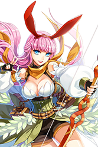 | Ranger | Minstrel & Wanderer | |
|
Emerging from the depths of a hidden forest, the Rangers employ a deadly combination of stealth, traps and archery to defeat their foes. They can protect themselves with Camouflage, before suddenly appearing and wiping out enemies from a distance. Their attunement with the wilderness allowed them to befriend the mighty Warg, a wolf like creature who can detect traps, attack enemies and even give the Ranger a ride. |
The eternally travelling, free-spirited performers are always a sight to see, bestowing great support to allies and nightmarish effects to enemies through the power of music. The Wanderer's Swing Dance improves the movement and attack speed of friends, while the Minstrel's Windmill Rush encourages them to hit harder. Against foes, their weapons of choice are the terrifying discord of Metallic Sound and a Severe Rainstorm of arrows. | ||
| Mechanic | Genetic | ||
|
A Schwarzwald researcher fused magic with lost technology and created the Madogears, robotic suits that are piloted by the Mechanics. With the Madogear, Mechanics can move quickly, shield allies with cloaking and barriers or smash an opponent with rocket fists. But make no mistake; even without the Madogear, Mechanics are masters of the axe, and can cleave apart enemies with Axe Boomerang and Axe Tornado. |
The Geneticists are devoted to the properties of transformation by utilizing the new and unknown biological materials. They mutated their Homunculus companions into Homunculus S, which have additional skills and greater capabilities. Their plant-based attacks include Crazy Weed, which creates vines that destroy field effects, and Howling of Mandragora, which increases the cast time of those who hear the horrifying wail. | ||
| 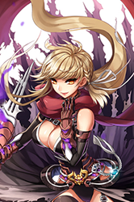 | Guillotine Cross | Shadow Chaser | 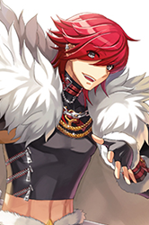 |
|
The society of Guillotine Crosses was a secret amongst secrets, the hidden executioners of the Assassin's Guild. Moving under the stealth of Cloaking Exceed, they can clear out waves of enemies using Rolling Cutter. If one enemy dares try to escape, Guillotine Crosses can finish them at a distance with Cross Ripper Slasher. Their knowledge of poisons has expanded well over those of the Assassin Cross, allowing them to cause a variety of debilitating effects that only they have the antidote for. |
nfluenced by ancient murals and artworks, the newly formed Shadow Chasers can infuse magic into paintings that become reality and stir distressing feelings in their adversaries. Their Masquerade skills can incapacitate their unfortunate foes, causing Ignorance that prevents skill usage, or Weakness in their arms where they can no longer hold weapons. Their paintings can even become dangerous ground traps that hold and confuse foes. | ||
| Arch Bishop | Sura | 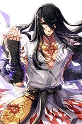 | |
|
By the light of the Holy Grail, the faith of the Arch Bishops shall prevail over all! Their healing, buffs and status removal spells can target an entire party at once, making them invaluable to every party. Unlike their predecesors, their Holy magics are not limited to Demon and Undead enemies, as Arch Bishops can smite down all wicked adversaries with the might of their Holy attacks, Judex and Adoramus. |
The Sura's highly honed combat abilities can beat down any who stand before them. Their tougher bodies can hold a larger number of Spirit Spheres via Rising Dragon, which they utilize in speedy Flash Combos. They can end combos with the ferocious Tiger Cannon area attack, or the ranged barrage of Gates of Hell. Also, Suras are masters of the Gentle Touch, pressure point techniques which can assist in battle many different ways. | ||
| 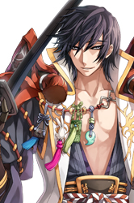 | Kagerou & Oboro | Rebellion | 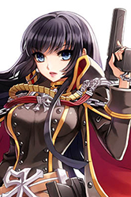 |
|
Once thought of as fairy tales, the elite sect of the Amatsu Ninjas have finally reappeared in the world, bringing their unique brand of deadly techniques. They utilize Illusion skills that cause status ailments, elemental Charms that increase the damage of specific properties, and stronger kunai, Huuma Shuriken and Zeny throwing skills. Kagerous have specific skills around shadows, such as Shadow Warrior, which grants Double Attack to an ally. Oboros instead use moon-based spells that can increase or decrease stats |
When the Rekenber Rebellion was quashed, the survivors went into hiding at Einbroch. There they built funds in secret, equipping themselves with a variety of firearms and preparing their skills for the next uprising. Locking onto targets with Crimson Marker, they can barrage enemies with the Pistol's Quick Draw Shot, blast them with the Rifle's Hammer of God or blow them to pieces using the Grenade Launcher's Dragon Tail missile. | ||
| 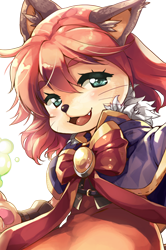 | Summoner | Super Novice | 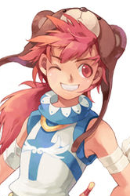 |
|
Doram Summoners are linked to nature, bestowing upon them the power of the sea, land and life. The Summoner can call the shrimp and tuna of the oceans to help restore health and protect themselves and their allies. The earth's Silvervines and Catnip are at their disposal, letting them Root Twist enemies in place and striking them with magical Stem Spears and Meteors. Even the wild's bugs, birds and mammals will help augment physical abilities and strike down any target the Summoner chooses. |
The Super Novices strive for what they call "exemplary mediocrity", a concept that may well be completely foreign to the other jobs. Rather than being the ultimate hero, they instead aim to be the ultimate ordinary person, believing that leading a normal life lets them better assist the common person. By learning a little from everyone they meet, they gained the skills of many early classes, but excel at absolutely nothing and can perform no advanced techniques. | ||
| 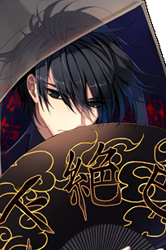 | Soul Reaper | Star Emperor | |
|
By researching in Nifleheim, the realm of the dead, the Soul Reapers discovered a unique power they dubbed Soul Energy. Harvesting the energy when attacking their foes, they could use it to link powerful new souls to allies which are unrestricted by job class. Soul Reapers can also curse groups of enemies and then blow them apart with their Curse Explosion, or deliver powerful endowable magic attacks with Espa and Eswhoo. |
Through copious study of the celestial bodies, the enlightened Star Emperors developed stances that could draw in the awesome power of the cosmos. They can utilize the sun's explosive Solar Burst to devastate scores of foes, the moon's mysterious energy with their New Moon Kick to mask their presence, and the limitless stars to rain countless blows upon their enemies. At their peak, Star Emperors can use the Stance of the Universe to unlock powerful player combat skills. |